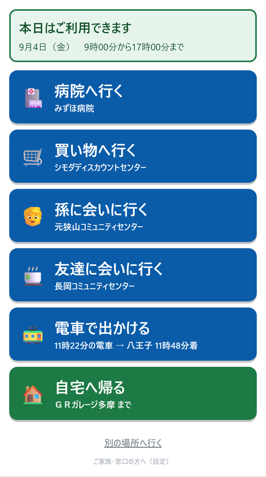
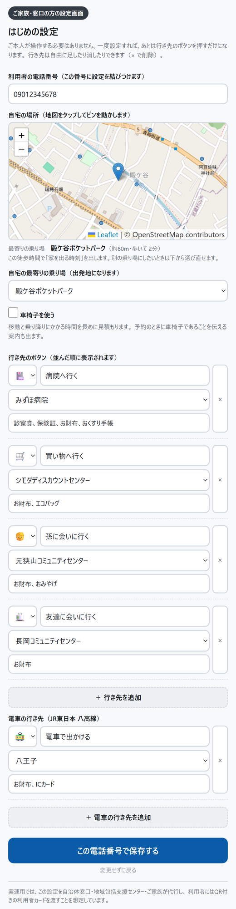
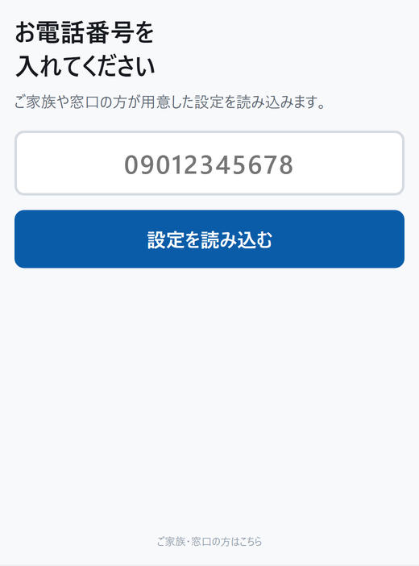
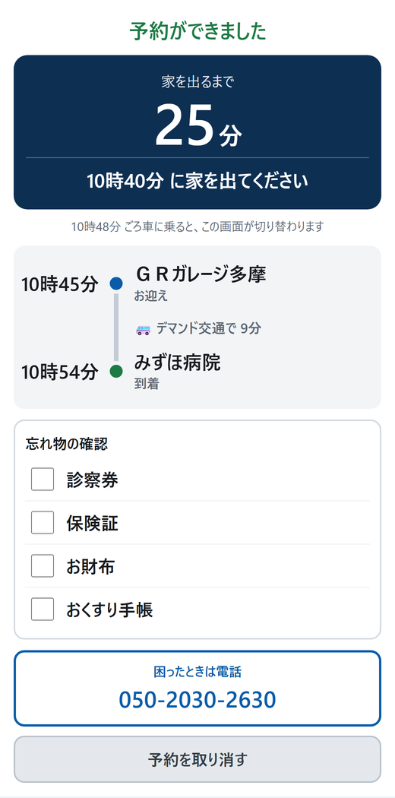
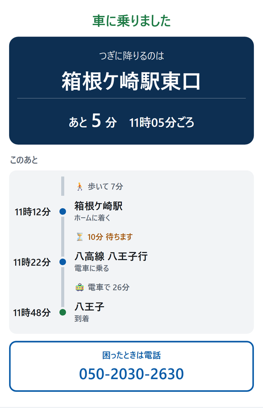
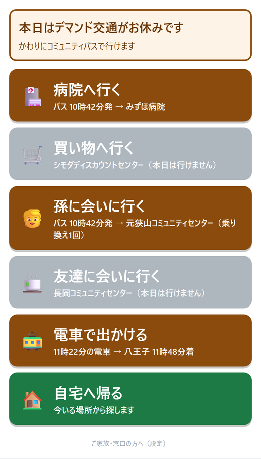
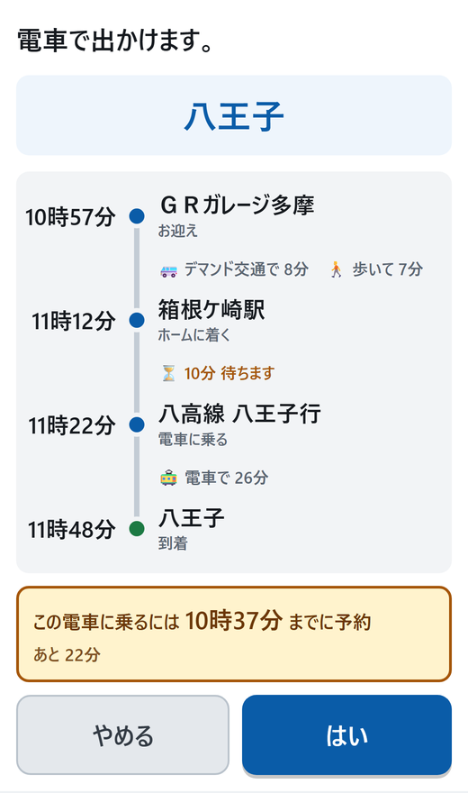

交通空白地の高齢者が、行き先のボタンを1つ押すだけで出かけられるアプリです。
アプリを開く → https://tyra0119.github.io/pj_call/
デマンド交通は、決まった路線を走らず、予約に応じて運行する乗り合いの交通です。 交通空白地の切り札ですが、使うには「今日は走る日か」「受付時間内か」「何分前までに予約が要るか」を 利用者が把握している必要があります。
このアプリは、その判断をアプリ側が引き受けます。利用者がすることは、行き先のボタンを 1つ押すことだけです。デマンド交通・コミュニティバス・JR八高線のどれで行くかは、 その日の運行状況に応じてアプリが選びます。

ご本人が設定する必要はありません。ご家族や窓口の方が、離れた場所から設定できます。 利用者は電話番号を伝えるだけです。

設定で「車椅子を使う」にチェックを入れると、時間の見積もりが変わります。
| 移動の速さ | 60m/分 → 40m/分 |
|---|---|
| 乗り降りの余裕 | 3分 → 8分 |
| 駅の改札・ホームまで | 5分 → 12分 |
同じ電車に乗るための予約の締切も、その分早くなります。 行程の表示も「歩いて◯分」から「移動◯分」に変わります。
読点（、）かカンマで区切って入れます。予約したあとの画面に、その行き先のぶんだけ出ます。
| 病院へ行く | 診察券、保険証、お財布、おくすり手帳 |
|---|---|
| 買い物へ行く | お財布、エコバッグ |
| 孫に会いに行く | お財布、おみやげ |
持ち物を設定していない行き先では、忘れ物の欄そのものを出しません。帰り道にも出しません。
利用者の端末でアプリを開くと、電話番号の入力画面が出ます。 番号を入れて「設定を読み込む」を押すだけで、設定が反映されます。

機種を変えたり、アプリを入れ直したりしたときも、同じ番号を入れれば設定が戻ります。 ハイフン入り（090-1234-5678）でもそのまま入れられます。
画面に並んでいる行き先のボタンを1つ押します。
お迎えの時刻と行き先が出ます。画面の下に、押すと何が起きるかが書いてあります。
| デマンド交通で行くとき | 「この内容で予約しますか？」→ ボタンは「予約する」 |
|---|---|
| バス・電車だけのとき | 「この予定で出かけますか？」→ ボタンは「これで行く」 バスと電車は予約が要りません |
「予約する」を押すと、5秒ほど「予約しています。しばらくお待ちください」と出ます。 そのままお待ちください。

この画面はそのまま開いておいて構いません。時間が来ると自動で切り替わります。
持ち物は家を出る直前に確認してください。予約した直後に確認しても、 置き直してまた忘れてしまいます。画面はその時々で書き方が変わります。
| まだ時間があるとき | 忘れ物の確認／家を出る前に確認してください。 |
|---|---|
| あと10分を切ると | そろそろ確認してください／あと◯分で家を出ます。のこり◯つ。 |
| 家を出る時刻 | 家を出る時間です／のこり◯つ、確認してください。 |
| ぜんぶ確認できたら | ぜんぶ確認できました。 |

乗り換えがあるときは、最終目的地ではなく最初に降りる場所を出します。 下には行程がぜんぶ並びます。減っていくことはありません。いま進んでいるところに 「今ここ」が付き、通り過ぎたところは薄くなります。
画面は段階ごとに変わります。そのときにすることだけが大きく出ます。
| 1. 車に乗りました | つぎに降りるのは 箱根ケ崎駅東口 |
|---|---|
| 2. 降りました | つぎに向かうのは 箱根ケ崎駅 「デマンド交通はここまでです。ここから先は電車です」と出ます |
| 3. 駅に着きました | 乗る電車は 八高線 八王子行 |
| 4. 電車に乗りました | つぎに降りるのは 八王子 |
「到着しました／お疲れさまでした」と出ます。 この画面は自動では消えません。「はじめの画面へ」を押すと最初の画面に戻ります。
「自宅へ帰る」を押します。出発地は、位置情報から探します。
| 駅から800m以内 | その駅から電車で帰る道のりを組み立てます |
|---|---|
| 乗り場から300m以内 | その乗り場から帰る道のりを組み立てます |
| それより遠いとき | 近い順に並べた一覧から、今いる場所を選びます |
| 位置情報が使えないとき | 行きに降りた場所を使うか、一覧から選びます |
瑞穂町のデマンド交通は木曜と日曜が運休で、年末年始や祝日にも運休日があります。 その日は、同じボタンを押すとコミュニティバスの経路に切り替わります。

バスでも行けない行き先は、ボタンが灰色になり「本日は行けません」と表示されます。
「電車で出かける」を押すと、箱根ケ崎駅でJR八高線に乗り継ぐ道のりを出します。 八王子・拝島・高麗川などへ行けます。

八高線の運行情報を取り込んでいます。遅れているときは、その分だけ予約の締切も後ろにずれます。 遅れの大きさによっては、案内する電車そのものが変わることもあります。
運転見合わせのときは、電車のボタンが押せなくなります。 予約して駅まで行ったのに電車が止まっている、を避けるためです。
予約後の画面と乗車中の画面に、予約窓口の電話番号が大きく出ています。 そのまま押すと電話がかかります。
| 予約を取り消したい | 予約後の画面のいちばん下「予約を取り消す」を押します。 「よろしいですか？」と確認が出るので、「取り消す」を押してください。 5秒ほど「予約を取り消しています」と出たあと、「予約を取り消しました」と表示されます。 やめる場合は「いいえ」を押すと元に戻ります |
|---|---|
| 設定を変えたい | 最初の画面のいちばん下「ご家族・窓口の方へ（設定）」から変更します |
| 別の端末で使いたい | 電話番号を入れれば同じ設定が読み込まれます |
運休日の切り替えや電車の遅れは、その日の運行状況によっては見られません。 画面の右（狭い画面では下）にある操作で、日時や遅延を仮に指定して確かめられます。
| 仮想の現在日時 | 木曜・日曜を選ぶとデマンド交通が運休し、バスに切り替わります |
|---|---|
| 予約したあとの進行 | 「乗車したことにする」「到着したことにする」で画面を先へ進めます |
| 八高線の遅延 | 5分・15分・運転見合わせを仮に指定できます |
| 設定リセット | 端末の設定を消して、電話番号の入力からやり直します |
アドレスの末尾に ?data=1 を付けると、画面のどの表示がどのデータの
どの項目から出ているかを示すパネルが開きます。
| 瑞穂町デマンド交通 「チョイソコみずほまち」 |
GTFS-Flex。運行日・受付時間・予約締切30分前・乗降場120か所 |
|---|---|
| 瑞穂町コミュニティバス | GTFS。停留所61・便94・5路線・運賃180円 |
| JR東日本 八高線 | GTFS。箱根ケ崎に停まる180便と沿線9駅 |
| JR東日本 鉄道関連リアルタイム情報 |
運行情報。遅延・運休・運転見合わせ |
自宅を登録する地図の背景には OpenStreetMap のタイルを使っています （© OpenStreetMap contributors／ODbL）。地図は設定画面だけに出ます。
いずれも公共交通オープンデータセンターが公開しているもので、ライセンスは CC BY 4.0 です。
実際の運行状況は、必ず運行事業者の案内をご確認ください。